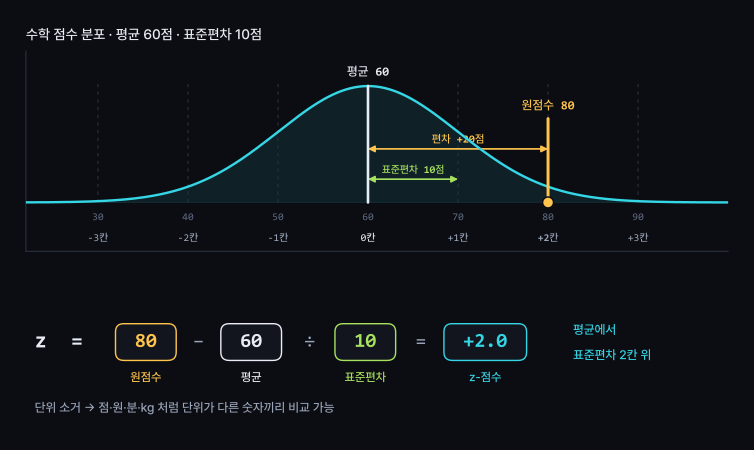
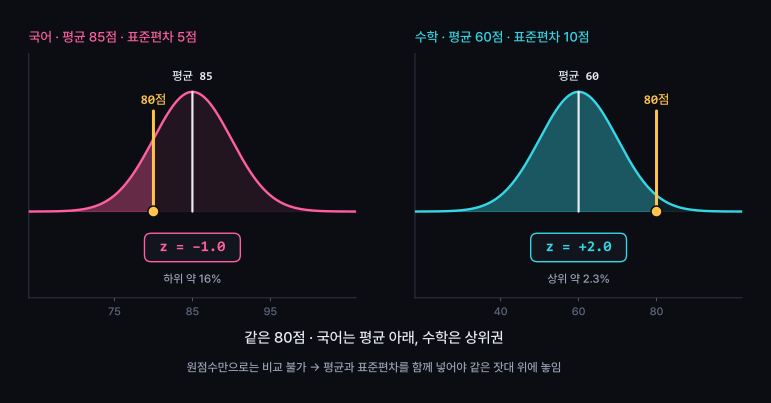
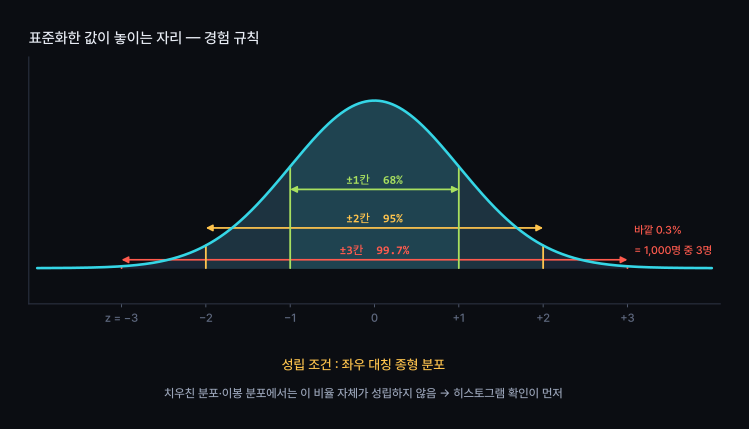
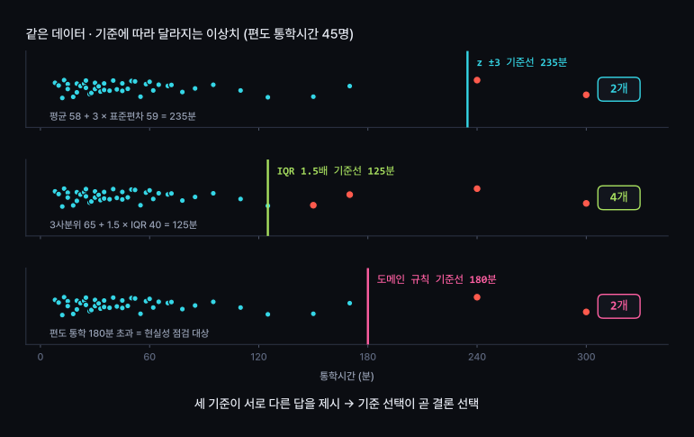
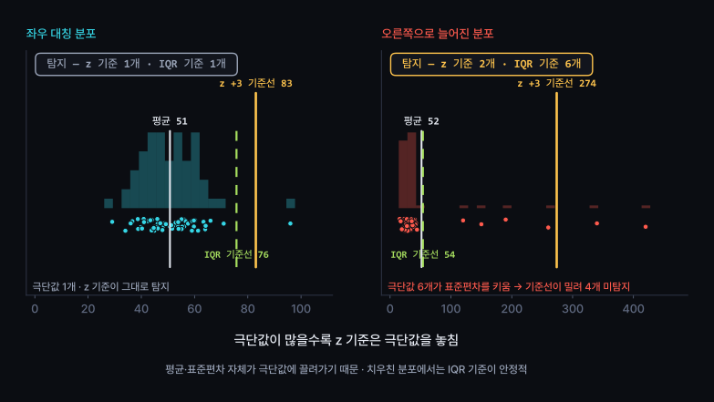

기준이 다른 숫자의 비교, 이상치 탐지
평균과 표준편차로 단위가 다른 숫자를 같은 잣대 위에 배치
이상치 기준 선택과 처리 결과 기록
«이상치 제거해줘» 요청 시 AI가 기준도 행 수도 알리지 않는 문제
원점수 = 그 과목 안에서만 통하는 값
비교하려면 기준점과 눈금이 필요
| 과목 | 원점수 | 반 평균 | 표준편차 | 같은 점수의 의미 |
|---|---|---|---|---|
| 국어 | 80점 | 85점 | 5점 | 평균 아래 |
| 수학 | 80점 | 60점 | 10점 | 평균보다 한참 위 |
과목마다 난이도와 분포가 상이 → 원점수 숫자만으로는 비교 불가
점수·시간·금액·무게처럼 단위가 다른 값도 동일한 문제
해결 방법 : 각 과목 분포 안에서 «어디쯤에 있는가» 로 변환
분포의 중심 위치
원점수에서 평균을 빼면 평균 대비 거리 확보
예 : 80 − 60 = +20점
그 집단에서 보통 벌어지는 거리
거리를 표준편차로 나누면 칸 수로 환산
예 : 20 ÷ 10 = 2칸
4주차의 두 숫자가 그대로 재등장
평균 = 어디가 중심인가 · 표준편차 = 한 칸이 얼마인가


| z | 뜻 | 대칭 분포에서의 자리 |
|---|---|---|
| 0 | 평균과 동일 | 한가운데 |
| +1 | 평균보다 한 칸 위 | 상위 약 16% |
| +2 | 평균보다 두 칸 위 | 상위 약 2.3% |
| −1 | 평균보다 한 칸 아래 | 하위 약 16% |
| ±3 바깥 | 세 칸 넘게 떨어짐 | 1,000명 중 3명 수준 |
z 의 부호 = 평균 위아래 · z 의 크기 = 떨어진 칸 수
국어 z와 수학 z, 키 z와 몸무게 z 까지 같은 자 위에서 비교 가능

좌우 대칭 종형 분포
봉우리 1개
예 : 키, 몸무게, 측정 오차, 많은 시험 점수
한쪽으로 늘어진 분포 — 연봉·집값·조회수
봉우리 2개 — 서로 다른 두 집단의 혼합
→ 68·95·99.7 비율 자체가 어긋남
z 계산은 어떤 데이터에서든 가능 · 해석이 성립하는 범위는 제한적
순서 : 히스토그램 확인 → 모양 판단 → z 해석
비교 대상 집단이 바뀌면 평균과 표준편차가 바뀜 → z 도 변동
표준화 기준을 문장으로 명시
«전체 480명 기준 z = +0.5»
전체 기준과 집단 기준의 결론이 다르면 둘 다 제시
13주차 팀 프로젝트에서 자주 발생하는 분쟁 지점
«너무 크다» 의 기준 설정
기준 선택이 곧 결론 선택

| 기준 | 계산 | 강점 | 약점 |
|---|---|---|---|
| z ±3 | 평균 ± 3 × 표준편차 | 계산 간단 · 단위 무관 | 평균·표준편차가 극단값에 끌려감 |
| IQR 1.5배 | 사분위수 기준 울타리 | 치우친 분포에 강함 · 상자그림과 동일 기준 | 이봉 분포에서 과소 탐지 |
| 도메인 규칙 | 현실 범위 직접 지정 | 의미 기반 판단 · 설명 용이 | 근거 문서화 필요 |
실무 순서 : 도메인 규칙 먼저 (단위·입력 오류 제거) → 남은 값에 통계 기준 적용

단위 혼용 · 자릿수 실수 · 기본값 99999
→ 원본 확인 후 수정 또는 제외
제주에서 통학 · 초고가 매물
→ 존재하는 값 · 제거 시 현실 왜곡
«재학생 통학» 분석에 포함되는 값인지
→ 대상 정의 문제
세 질문의 답이 서로 다름 → 처리 방법도 상이
기준 없이 지우면 가장 중요한 정보가 먼저 사라짐
| 처리 | 선택 상황 | 보고 내용 |
|---|---|---|
| 유지 | 실제 값 · 분석 대상 포함 | 평균과 중앙값을 함께 제시 |
| 분리 보고 | 소수의 특이 집단 | 본 분석 + 특이 사례 별도 문단 |
| 제외 | 입력 오류 · 대상 외 | 기준 · 제외 행 수 · 제외 전후 평균 |
어느 쪽을 선택해도 기록은 동일하게 필요 · 3주차 정제 로그의 연장
AI 가 조용히 지우지 않게 기준을 지정
[목표]
숫자 열 하나를 표준화하고, 이상치 후보를 기준과 함께 목록화
[제약]
- 이상치 임의 삭제 금지 · 목록만 제시
- 정규분포를 가정하기 전에 히스토그램 근거를 먼저 제시
- 결측 행은 세어서 따로 보고
[검증 조건]
- z 기준과 IQR 기준 결과를 모두 제시 · 차이 나는 행은 표로 정리
- 사용한 평균·표준편차·사분위수 값을 함께 표기
- n(사용 행 수)과 결측 제외 행 수를 표기
- 상위 5행은 원본 값과 z 값을 나란히 제시
[비목표]
- 상관 분석, 예측, 차트 꾸미기
핵심 : [제약] 첫 줄
«목록만» 이라는 한 줄이 원본 데이터를 보호
| # | 실습 | 확인할 개념 |
|---|---|---|
| 1 | 내 데이터 숫자 열 2개 표준화 → z 상위 5행 확인 | z 계산과 해석 |
| 2 | "이상치 제거해줘" 한 줄만 입력 → 결과 저장 | AI 함정 #4 |
| 3 | 위 명세로 다시 요청 → 2번 결과와 비교 | 기준 명시의 효과 |
| 4 | z 기준과 IQR 기준 대조 → 차이 나는 행 확인 | 기준 선택 |
| 5 | 집단별 표준화와 전체 표준화 비교 (확장) | 기준 범위 |
2번과 3번 결과 나란히 비교 · 수업 안에서 완료
본인 데이터에서 단위가 다른 숫자 열 2개 선택
각각 표준화 후 같은 대상의 z 값 비교
제출 내용
· 두 열의 평균·표준편차·n
· z 값 비교표 (상위 5행)
· 판단 근거 세 줄 — 어느 쪽이 상대적으로 높은지, 그렇게 본 이유
· 히스토그램 2장
분포가 치우친 열을 고른 경우 그 사실도 함께 기록
경험 규칙이 성립하지 않는 상태에서의 해석은 보류로 표기
| 개념 | 핵심 |
|---|---|
| z-점수 | (원점수 − 평균) ÷ 표준편차 = 평균에서 떨어진 칸 수 |
| 단위 소거 | 점·분·원·kg 처럼 단위가 다른 값끼리 비교 가능 |
| 부호와 크기 | 부호 = 평균 위아래 · 크기 = 떨어진 칸 수 |
| 경험 규칙 | ±1칸 68% · ±2칸 95% · ±3칸 99.7% — 대칭 종형에서만 |
| 기준 범위 | 전체 기준과 집단 기준의 z 가 상이 → 기준 명시 필수 |
| 이상치 기준 | z ±3 · IQR 1.5배 · 도메인 규칙 → 서로 다른 답 |
| z 기준의 약점 | 극단값이 표준편차를 키움 → 치우친 분포에서 미탐지 |
| 제거 전 질문 | 입력 오류 · 실제 극단값 · 분석 대상 여부 |
| 보고 형식 | 기준 · 제외 행 수 · 제외 전후 평균 |
| AI 함정 #4 | «이상치 제거해줘» → 자동 ±3σ 컷 · 명세에 목록만, 기준 두 개 포함 |
같은 데이터로 그린 두 그래프
한쪽에서만 매출이 2배로 보이는 이유
목적별 차트 선택과 축 조작의 판별